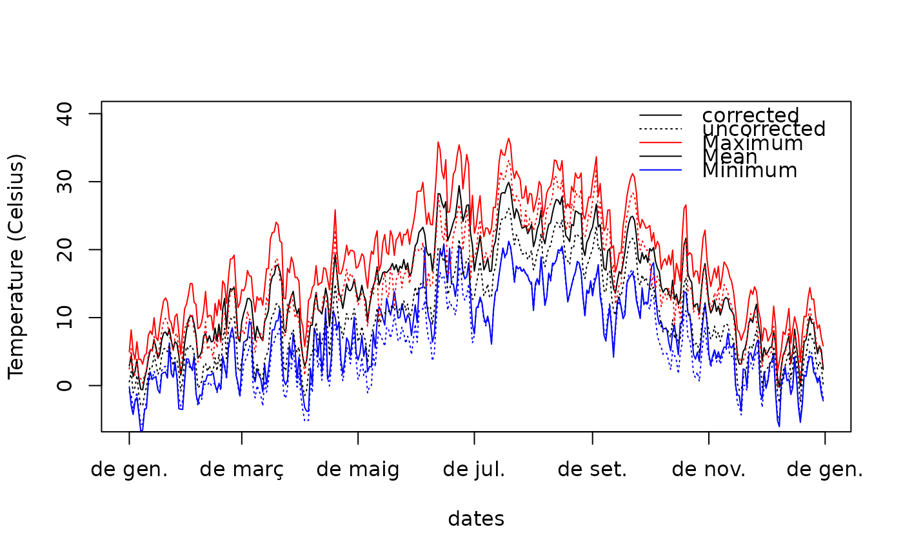
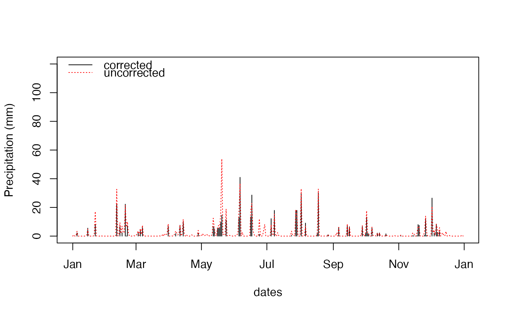

correctionpoints.RdFunctions correctionpoint and correctionpoints perform correction of predicted climatic data by applying statistical correction methods (unbiasing, scaling, or quantile mapping) to meteorological variables. Function correctionpoints.errors allows evaluating, for each point, the bias and mean absolute error (MAE) obtained before and after correcting the climate model for the historical period.
correctionpoint(obs, mod, proj, dates = NULL,
params = defaultCorrectionParams(), verbose=TRUE)
correctionpoints(object, points, topodata = NULL, dates = NULL,
export = FALSE, exportDir = getwd(), exportFile = NULL,
exportFormat = "meteoland/txt", metadataFile = "MP.txt",
corrOut = FALSE, verbose = TRUE)
correctionpoints.errors(object, points, topodata = NULL,
error.type="residuals.cv",keep.data = FALSE, verbose = FALSE)A data frame with observed meteorology.
Data frame with predicted meteorology for the reference and projection periods, respectively.
A list with correction params (see defaultCorrectionParams).
An object of class MeteorologyUncorrectedData-class containing the meteorology of more than one point.
An object of class SpatialPointsMeteorology-class with the coordinates and historical meteorological data of the locations for which correction of predicted climatic data has to be done. Alternatively, an object of class SpatialPointsDataFrame-class containing the meta data (columns dir, filename and possibly format) of meteorological files that will be read from the disk.
A data frame with topographic data for each point (i.e. three columns named elevation, slope and aspect). If topodata = NULL then Penman's potential evapotranspiration is not calculated.
An object of class Date with a subset of dates of the projection period to be corrected. If dates = NULL then all dates in proj or the projection data of object are processed.
If export = FALSE the result of correction is stored in memory. Otherwise the result is written in the disk (using the format specified in exportFormat).
Output directory for corrected meteorology data (txt/rds format).
Output file for corrected meteorology data (netCDF format).
The name of the file that will store the meta data describing all written files.
Export format for meteorological data (see writemeteorologypoint). If format is "meteoland/txt", "meteoland/rds", "castanea/txt" or "castanea/rds" the function tries to write one file per point in exportDir. If format is "netCDF" the function will write data to a single file specified by exportFile.
Boolean flag to indicate that correction parameters (i.e. calculated biases) should be included with the output. Setting corrOut = TRUE changes the returned value.
Boolean flag to print process information.
String to specify the error to be evaluated, either "before" (before correction), "residual" (after correction) or "residual.cv" (after correction, but using cross-validation).
Boolean flag to return the uncorrected/corrected data for the historical period.
Function correctionpoints performs statistical correction of predicted climatic data for all points supplied in points whereas correctionpoint performs statistical correction of one single point. Observed meteorological data for each point typically comes from a nearby meteorological station, but they can be the result of interpolating the meteorology of several stations (see MeteorologyInterpolationData) or they can be extracted from reanalyzed meteorology (e.g. EU-WATCH) (see extractNetCDF).
For each target point, correctionpoints function first determines the predicted cell where the point falls according to the euclidean distance in the geographic space of object. Then it calls correctionpoint. In turn, correctionpoint determines the dates that are shared in observed and predicted data for the historical period. These meteorological data of dates are used to conduct the correction of predicted climatic data for the future period. Corrections biases are calculated and applied for the twelve months separately. The user can control the methods used for correction of each meteorological variable by changing the slot params in object (see class MeteorologyUncorrectedData-class) or the parameter params to correctionpoint. Three options are allowed (see defaultCorrectionParams): (a) 'unbias' for shifting the mean; (b) 'scaling' for multiplication by a factor; and (c) 'quantmap' for empirical quantile mapping between observed and modelled data (Déqué 2007).
A difficulty arises for quantile mapping when the variables bounded by zero, such as precipitation. As the models tend to drizzle (or may have lower frequency of precipitation events), the probability of precipitation in the model may be greater or lower than that observed. To correct this, when model precipitation is zero an observed value is randomly chosen in the interval where the observed cumulative frequency is less than or equal to the probability of no precipitation in the model. This procedure ensures that the probability of precipitation after correction is equal to that observed (Boé 2007).
Function correctionpoint returns a data frame.
If export = FALSE, the function correctionpoints returns an object of class SpatialPointsMeteorology-class with the bias-corrected meteorology for each point. If export=TRUE then bias-corrected data is written into the disk. For txt/rds export formats, the function returns an object of class SpatialPointsDataFrame-class containing the meta data of the files written in the disk. For netCDF export format the function returns NULL. If corrOut = TRUE the function returns a list which contains any previous output and an object with the calculated correction factors (biases, mappings) for each point and month.
Function correctionpoints.errors (keep.data = FALSE) returns a data frame with the mean absolute error (MAE) and bias for each variable and point. If keep.data = TRUE then the function also returns a list of data frames with the uncorrected/corrected series used in the comparisons with observations.
Boé J, Terray L, Habets F, Martin E (2007) Statistical and dynamical downscaling of the Seine basin climate for hydro-meteorological studies. Int J Climatol 27:1643–1655. doi: 10.1002/joc.1602
De Caceres M, Martin-StPaul N, Turco M, Cabon A, Granda V (2018) Estimating daily meteorological data and downscaling climate models over landscapes. Environmental Modelling and Software 108: 186-196.
Déqué M (2007) Frequency of precipitation and temperature extremes over France in an anthropogenic scenario: Model results and statistical correction according to observed values. Glob Planet Change 57:16–26. doi: 10.1016/j.gloplacha.2006.11.030
data(examplegridtopography)
data(exampleinterpolationdata)
data(examplecorrectiondata)
#Creates spatial topography points from the grid
p = 1:2
spt = as(examplegridtopography, "SpatialPointsTopography")[p]
#Interpolation of two points for the whole time period (2000-2003)
historical = interpolationpoints(exampleinterpolationdata, spt)
#> Processing point '1' (1/2) - done.
#> Processing point '2' (2/2) - done.
#Downscaling of future predictions (RCM models, year 2023)
predicted = correctionpoints(examplecorrectiondata, historical, spt@data)
#> Points to correct: 2
#> All points inside boundary box.
#> Correcting point '1' (1/2) - ipred = 3 done.
#> Correcting point '2' (2/2) - ipred = 3 done.
#Plot predicted mean temperature for point 1
meteoplot(predicted, 1, "MeanTemperature", ylab="Temperature (Celsius)", ylim=c(-5,40))
meteoplot(predicted, 1, "MinTemperature", add=TRUE, col="blue")
meteoplot(predicted, 1, "MaxTemperature", add=TRUE, col="red")
#Add uncorrected mean temperature data (cell #3)
lines(examplecorrectiondata@dates,
examplecorrectiondata@projection_data[[3]]$MeanTemperature,
lty=3)
lines(examplecorrectiondata@dates,
examplecorrectiondata@projection_data[[3]]$MinTemperature,
col="blue", lty=3)
lines(examplecorrectiondata@dates,
examplecorrectiondata@projection_data[[3]]$MaxTemperature,
col="red", lty=3)
legend("topright", legend=c("corrected","uncorrected", "Maximum", "Mean", "Minimum"),
col=c("black","black", "red","black","blue"), lty=c(1,3,1,1,1), bty="n")

#Scatter plot
plot(examplecorrectiondata@projection_data[[3]]$MeanTemperature,
predicted@data[[1]]$MeanTemperature, cex=0.1, asp=1,
ylab="Corrected mean temperature", xlab="Uncorrected mean temperature")
abline(a=0,b=1,col="gray")
#Plot predicted precipitation for point 1
meteoplot(predicted, 1, "Precipitation", ylab="Precipitation (mm)", ylim=c(0,120))
#Add uncorrected mean temperature data (cell #3)
lines(examplecorrectiondata@dates,
examplecorrectiondata@projection_data[[3]]$Precipitation,
col="red", lty=3)
legend("topleft", legend=c("corrected","uncorrected"), col=c("black","red"), lty=c(1,3), bty="n")

#Scatter plot
plot(examplecorrectiondata@projection_data[[3]]$Precipitation,
predicted@data[[1]]$Precipitation, cex=0.1, asp=1,
ylab="Corrected precipitation (mm)", xlab="Uncorrected precipitation (mm)")
abline(a=0,b=1,col="gray")